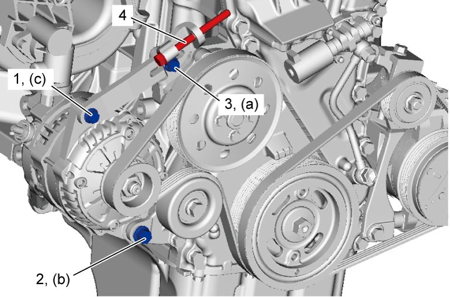

1J
| Water Pump / Generator Drive Belt Tension Inspection and Adjustment |
1)Check water pump / generator drive belt for crack, cuts, deformation, wear and cleanliness. If it is necessary to replace water pump / generator drive belt, refer to Water Pump / Generator Drive Belt Removal and Installation:M16A.
2)Check water pump / generator drive belt for tension. Water pump / generator drive belt is in proper tension when it deflects as follows under thumb pressure (about 100 N (10.2 kgf, 22.5 lbf).).
If belt tension is not as specified, go to next steps.


If belt tension is not as specified, go to next steps.
Water pump / generator drive belt tension
“a”
Existing belt:
4.8 – 6.2 mm (0.18 – 0.24 in.) as deflection / 100 N (10.2 kgf, 22.5 lbf)
New belt:
4.2 – 4.8 mm (0.16 – 0.18 in.) as deflection / 100 N (10.2 kgf, 22.5 lbf)
 "Expand image")
3)Loosen generator bolt (1), pivot bolt (2) and adjuster bolt (3), and then adjust belt tension to specification described at Step 2) by loosening / tightening generator adjusting bolt (4).
4)Tighten generator adjuster bolt to specified torque.
5)Tighten generator adjusting bolt to 7.0 N·m (0.71 kgf-m, 5.5 lbf-ft).
6)Tighten pivot bolt to specified torque.
7)Tighten generator bolt to specified torque.

 "Expand image")
8)Check belt tension for specification after turning crankshaft two revolutions clockwise.